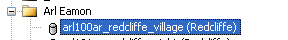
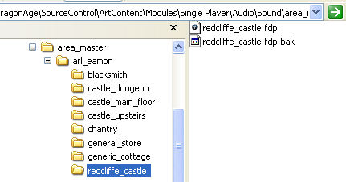
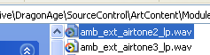

FMOD
A generic PDF manual for FMOD can be found in the Dragon Age\tools\FMOD Designer\documentation directory. This documentation is tailored more specifically to FMOD's use in Dragon Age. See sound for how to use the designer toolkit to place sounds within Dragon Age areas.
Contents
- 1 Project setup and convention
- 1.1 Definitions and vocabulary - FMOD particulars
- 1.2 General techniques - starting up.
- 1.3 Folders and subfolders - setting up audio for FMOD.
- 1.4 Setting up sound definitions and bringing audio into FMOD.
- 1.5 4.0 ambiences and 3D placeable level emitter events.
- 1.6 building projects and the .fev/.fsb.
- 2 Sound definition setup and convention
- 3 Event setup and convention.
- 4 Global projects and level specific projects.
- 5 Optimization
Project setup and convention
Definitions and vocabulary - FMOD particulars
FMOD pages:
In FMOD there are certain terms and descriptions for functions that may be different audio middleware to audio middleware. There are 7 pages in FMOD that define different functions that the middleware performs. Listed here is an overview, the details of each will be explained fully later on in this document.
1. this page contains all the audio events that the game engine will call. Within these events you will have the sound designed asset(s) and control parameters such as volume, reverb send and 2D-3D panning automation.
2. on this page you will edit the event itself. In here you assign sound definitions, create layers and assign control parameters to the event, as seen below.

3. this is the directory for all of the audio files that will be called in events. They can be single audio files that play once or loop, or multiple files that you want to behave in a certain way based on the parameters for the sound definition. Within the sound definition you can define behavior parameters, as seen below:

These parameters will define the behavior of the audio file in the event you assign it too. When creating audio assets for the game and updating existing ones, the sound designer will usually start here.
4. this is the function of FMOD that controls the data portion of the audio assets in the project. In here you will create a bank that contains audio files that you want treated a certain way, mainly for optimization and data compression schemes. All audio files in the project will be contained in a bank and these are what are built when you build the project for use in the game. This bank build creates a .fev (event information) and .fsb (sample bank (audio) information) files that you will copy to your override folder and is read by the game, as seen below:

Wave banks are automatically created when you import audio into FMOD. They need to be manually conformed to naming standards and what properties they will contain.
5. on this page you can define and audition reverbs to be used in the game. This function is not a necessary part of DA level design FMOD projects as the reverbs are handled by a master reverb project. In order to hear reverb on an event you must assign the “Reverb Level“ effect to the event and assign a value to the automation in the event.

6. view stats and performance.
General techniques - starting up.
When you begin to create an FMOD project there are certain steps to follow in order to get your project up and running.
Step 1- create a new project on your local DA directory.
Step 2- Create a new folder in the area_master folder named for what plot you are working on, or if there is a plot folder already made, create a subfolder to contain your new FMOD project.
All plot folders are named for the corresponding plot in the DA area editor, all FMOD projects are named from the area list name in the object inspector in the area editor, minus the area list prefix. Therefore the plot folder is named arl_eamon and the FMOD project is named redcliffe_castle. In this example you would create your FMOD project in the redcliffe_castle folder and name it the same as the folder that contains it.



Please note that all folder names are lower case and have spaces represented by underscores.
Step 3- open your new FMOD project and delete the untitled event that FMOD creates by default and save the project.

Step 4- click on the Sound Definitions page and you are ready to bring audio into FMOD.
Folders and subfolders - setting up audio for FMOD.
All audio files to be used in an FMOD project must be contained in the same folder as the .fdp, or project file in order for the DA resource builder to build them properly. This set-up requires a bit of file management from the sound designer.
When arranging audio for use by FMOD, you will typically want to define folders and subfolders for audio files that are used in a particular way. For example, a folder called “exterior_ambience” will contain all of the audio files that would be assigned to volumes in the level and played as 4.0 audio events, whereas a folder called “3d_placeables” will contain all audio files being called as one shots and specialized events.
A typical folder layout could be as follows:
This process is recommended to keep everything consistent project to project, as well as neat and tidy. You should be able to clearly see, at a glance, what is going on in any FMOD project that follows this structure. You will then use this file structure to order and group your sound definitions within FMOD, as indicated below.

Setting up sound definitions and bringing audio into FMOD.
In order to bring audio into FMOD you must first set up a sound definition, which will allow FMOD to see and play the audio, based on parameters that you define. To begin, you must first create a folder structure that reflects the folder structure in the .fdp folder, as stated in “iii) folders and subfolders- setting up audio for FMOD.” First you must create a sound definition folder as it is in here that you will organize your sound definitions themselves.
There are 4 main sound definition folders currently established for DA level design using FMOD, exterior_ambiences, interior_ambiences, 3D_Placeables and scripted_sounds.
Right click on the empty grey space, or on the sound definition folder you want to add the sound definition to:


Next, within the sound definition folder, called “exterior_ambiences” in this example, you will create a sound definition folder, by right clicking on the exterior_ambiences folder and choosing “add empty sound definition”.

You will have then created a sound definition that will contain your audio. You will be prompted to name the sound definition upon creation and you should name this sound definition to represent what the audio is inside it. An easy way to do this is to use the file name that the sound definition will contain.


To get audio into the sound definition, right click on the sound definition folder and select “add wavetable”, you will then be able to browse to the directory that contains your audio.

Upon selection, the audio file or files will now show up in your sound definition folder, ready to be used.

4.0 ambiences and 3D placeable level emitter events.
Two main types of event can be created to design sound for the levels in DA. These main types are 4.0 ambiences or 3D placeable events. The 4.0 ambiences are used for expressing sounds like air tones, winds or any other sounds that you will assign to play in an audio volume in the area editor. These sounds will play in 4 speakers, the Left and Right front speakers and the Left and Right rear speakers. These sounds will not specialize but can be either constant loops or spawned sounds that spawn over time or used as loops.

These events will need to be created as 3D events, as they have elements of 3D positional sounds. Although these sounds play as 4.0 within a defined space, their edges can be made to be 3D positional. The event above defines an example the volume and 2D-3D roll-off at the edge of the volume. If desired, the event will now be increasingly 3D to 2 meters and totally 3D after that. This is a typical exterior event with a roll-off of 5 meters, interior event roll-offs will usually be no more than 2 meters as the sounds will bleed room to room if it’s any bigger.
3D placeable events are sounds that are placed as emitters in the level and can be directional, like fires or other VFX, as seen below:
or created as an area effect wherein the sounds will randomize position and volume, such as birds, dogs or distant thunder, as seen as the second example below:

{kind=link}
{kind=link}
{kind=link}
{kind=link}
{kind=link}
{kind=link}
{kind=link}
{kind=link}
{kind=link}
{kind=link}
{kind=link}
There are certain ways to set up sound definitions and events both 4.0 and 3D placeable sounds. This will be explained in detail in the “c) Event setup and convention” chapter of this document.
building projects and the .fev/.fsb.
In order to see sounds that we have created in the area editor, as well as hear them in the game, the project must be “built”. This is FMOD’s term for creating the data needed for the area editor and the game to call FMOD to play the sounds as we have created them. Upon building a project and .fev and .fsb file are created that we then copy to our override folder. The area editor and the game access them from there to be used by each.
The override folder
This will be in a different location for each sound designer, depending on how you are set up with the DA client but it is typically found in the following pathway:
\packages\core\override
Your .fev and .fsb files must be placed in this folder in order for the area editor, the game and the DA resource builder to use them. There are two ways to get them there, the first being to physically copy them there and the second being to direct FMOD to build them there, as shown below:

The latter can be tricky, especially when there are multiple people working on the project and not everybody’s file pathways are the same. Choose the method that works for you and exercise caution and consideration if you choose to have FMOD send your .fev and .fdp files to the override for you.
Building a project
In order to build a project, select “Build project” from the Build menu in FMOD:

You will then be shown a pop-up window. Ensure that the target platform (PC) is selected and that the bank is checked off. Some projects will have multiple banks, make sure they are checked or they won’t be built. Press the “Build” button and wait for the build to complete, this can take several minutes. When the build is completed the .fev and .fsb files can be copied to your override or they will be there already, depending on how you have your project set up.

Sound definition setup and convention
Use and parameters
The sound definition is the function of FMOD by which audio is imported into FMOD and playback behavior is defined. Once we have created a sound definition, as stated earlier in this document, we can then define certain parameters that will enable FMOD to provide a playback behavior that is desirable for how we choose to sound design for the level. You must have audio and sound definitions created in order to use these functions. The behaviors defined by sound definition parameters are as follows:
1. Spawn time- this is the max. and min. time in milliseconds that the sound definition will repeat. There are 2 number values that represent this. A value of both being 0 here will mean no repeat. Values of 1500 and 20000, for example mean that the sound definition will repeat between 1.5 seconds and 20 seconds. The behavior of this repetition is defined by the Play mode.
2. Maximum spawned sounds- this is the maximum number of simultaneous sounds that this sound definition will spawn at any given time, based on randomization parameters like Spawn time and Play mode.
3. Play mode- this is how individual sounds are chosen from the sound definition. There are 6 to choose from, Sequential, SequentialEventRestart, Random, RandomNoRepeat, Shuffle and ProgrammerSelected. This is how the sound definition will play, and can be chosen based on whether you have one or multiple files in the sound definition.
4. Volume- volume in decibels at which the sound will be played. You can pre-mix your sound definition here, but there are other places to control volume, usually this is left at 0.
5. Volume randomization- the maximum random negative gain that will be applied to the sound.
6. Pitch- the relative pitch in octaves at which the sound will be played. Note that this value is in octaves, so a calculation is needed to enter a percentage value here.
The formula is X (semitones desired) / 12 (semitones in an octave) = % value, for example:
3 semitones / 12 semitones = 0.25 octaves.
If you want a negative pitch here, you must put in a – sign before the value, otherwise it will be a positive pitch.
7. Pitch randomization- this is the random deviation from the relative pitch, in octaves. This will add a +/- pitch randomization of whatever value you put in here, once again, in octaves. For example:
If I want a pitch randomization of + or – 2 semitones, I will enter 0.17 here, which will randomize my sound in pitch over 4 semitones in total.
8. 3D position randomization- this is a random deviation from the event’s parent position, in game units (meters). This is useful for events that are used as and area effect or in VFX to randomize the position of sounds. This value is a percentage 0 being no randomization and 100 being total randomization.
Once you have imported audio into FMOD and have created an event, you can edit the sound definition parameters to make the event play the way you desire. Note that all of our randomization is handled on the sound definition, not on the event, even though there are parameters there.
Spawned sounds, spawn times and sound definition behavior
Sound definitions can be spawned in several different ways, with several different results and can be used with 4.0 and 3D events. This parameter works in tandem with the Spawn time, Maximum spawned sounds and Play mode parameters.
The first and most basic way to play a sound definition is with no spawn time, as in a single audio file you just want to loop, like an air tone. These loops must be perfect and sample rate conversion friendly.

The second way is to spawn the sounds over time, to randomize when they play and how often. In the 4.0 example below, the wind gust sound definition is spawned between 500 milliseconds and 5 seconds, with a maximum of 4 playing at once and a play mode of RandomNoRepeat that randomly plays a sound definition that has 8 sounds in it.

This sound will then play as a randomized wind gust that will spawn randomly and provide the desired effect. This technique is also useful for spawning 3D area effect events, like birds, to randomize when they play over an area in 3D, as seen below.

This crow sound will spawn randomly between 2.5 seconds and 15 seconds, choosing randomly between 8 crow audio files.
The above sound definition behavior can also be used with volume, pitch and 3D position randomization to create a great 3D effect. 3D position randomization will only work with 3D emitter style events and will not randomize position in 4.0.
The third and trickiest technique is to use one shot audio files and play them while closely spawning over each other in a randomized “looping style” effect. This technique requires some time and energy to get working properly and doesn’t always work right away. When it does work it is very useful for sounds like wind, where the randomizing sounds are spawned over top of each other while randomizing volume and pitch to create a wonderfully varied effect. For example:

In the example above there are 8 wind sounds that are approximately 10 seconds in length. They are spawned randomly between 1 and 5 milliseconds to a maximum of 4 at once, while randomizing -2 dB in volume and +/- 2 semitones in pitch. Although these audio files do not have to be perfect loops they do need to have matching zero crossings to avoid pops. The particular audio files in the above example have a fade in of 500 milliseconds to smooth over the transitions when spawned. There is no real definitive method to apply here, just do what sounds good!
Event setup and convention.
FMOD events
As stated above in the overview, there are 3 main types of audio events being used for DA level sound design in FMOD. 4.0 ambiences, 3D placeable emitters and 3D area effect emitters. These 3 types are all used in conjunction with each other to create a total sound design for an area. Sound designers are by no means limited to using these types of events when designing the sound for a level, but for the sake of simplicity and consistency, these are the only events that will be available in the generic_ambience project. Sound designers are encouraged to create new events in their additional projects per level if need be.
FMOD events contain several parameters that will concern the sound designer. It is on the event itself that we define the volume, priority, max playbacks and behavior, 3D mode and roll-off type, 3d cone, 3D pan level, 2D speaker levels and any user properties that may be applicable.
Creating Events
On the events page, right click in the grey space and select “add event group”. These event groups should reflect your sound definition file structure and be named similarly.
There are 4 main event groups currently established for DA level design using FMOD, exterior_ambiences, interior_ambiences, 3D_Placeables and scripted_sounds, which follow sound definition folders named in the same fashion.

If there is already an event group created in the project and you are adding an event, or creating a new event in the event group, right click and select “add event”.

In this example these event group “exterior_ambiences” was created, and will contain sounds that we will assign to audio volumes. Note that the words are lower case and spaces are represented with underscores.
Upon selecting “add event”, you will be prompted to name the event and select a template if desired. We are not using templates in DA level design projects as they have proved to be too problematic and confusing. All sound designers must learn how to create events from scratch, although you can copy and paste similar existing events that suit your needs. If you do use a template to create you event, the sound designer must remember to deselect the template used in the “Use template” field, otherwise you will not be able to edit the event.

|

|

| |
| New event named for same sound definition. | |
All events should be named the same as the sound definition they contain. If the events are using multiple sound definitions then name them appropriately.
Creating the 3 main event types
4.0 ambience event
These events are meant to be used as assigned sounds to an audio volume, they will play in 4.0 and will either just cross-fade at the edges of the volume or cross-fade in volume and change from 2D to 3D, which will be explained more fully in part ii) of this chapter.
Upon creating the event itself, we are ready to make it into a 4.0 ambience looping event, as follows:

We start with a default volume for ambience events at -18 dB, this can be adjusted later at the mix stage. It is not uncommon for event volumes to range from -24 dB to +12 dB, depending on the content and desired mix levels.

Priority defaults to “128” and max playbacks should be set to “4” to start off. More on this later in this document.

Mode is set to “3D”, all FMOD events for ambiences are set to 3D to take advantage of certain parameters available only to 3D events. This event will play as 4.0, so it is essentially 3D.
3D roll-off is set to “custom”, as we will create our own for the event.

3D position defaults to “World relative” and should be left there. Note that you can set the 3D position Randomization here, but it only works when the event is refired. We do this randomization on the sound definition so that it will randomize while the event is still playing.

Here is where we set our 4.0 ambience parameters and make this event play in that fashion. 3D pan level is set to 0, meaning that the sound pans according to speaker levels. We set our speaker levels at -3 dB per L, R, LR, and RR speaker in order to compensate for stereo fold-down. If we wanted to we could set the 3D Pan Level to 1 and add the 3D pan level effect to the event and this event would specialize at the edges of the volume it is assigned to, more on that in the next section.

We have one user property called UseMaxPlaybacksFix, which we have to add to all events that will be used in multiples in the level. This user property controls how many sounds FMOD is playing at once and works in conjunction with the Max playbacks parameter. This will allow us to use these events more than 1 time in a level and not use too much CPU. This property is not optional and must be used on events that fit the multiple playback criteria. To set it up, right click on the “User property” parameter and select “Add/Edit user properties”:

Select this and you will see a window pop-up:

Click the “Add” button and type in “UseMaxPlaybacksFix” into the window and hit “OK”
You must now enter the integer “1” into the parameter space provided under the “+” tab beside “User properties”:

The event is now created, all you need to do now is assign a sound definition to the event, create volume, reverb and other effect roll-offs.
In the event editor page we should see a blank event layer similar to this:

In order to get started and get audio playing in here we need to first define an event parameter, in this case a 3D distance parameter, by right clicking on the bar as prompted:

We then have a 3D distance parameter that allows us to control the event over distance and add effects, like volume and reverb.

We set the 3D distance parameter’s properties by right clicking again where you clicked to create the parameter and select “Parameter properties”:

We now see a pop-up window that allows us to edit the properties for the 3D distance parameter:

And the result to our event layer, below:

We have created an event layer with a 3D distance of 5 meters, when we set our roll-off volume this will be the resultant radius of the roll-off around the edges of the audio volume this sound is assigned to.
We can now add our sound to the event, we do this by right clicking in the middle of the layer and selecting the “Add sound” option:

You will then be prompted to choose a sound from your sound definitions:

Note that you can choose how the sound is played, as a loop or one shot, but you can change that in the properties of the sound as well. We have “looping” selected in this example as we want this to be a looping ambience. Below are screenshots of the sound instance properties window where you can select the playback behavior of the sound as well.


You will now have an event layer with a sound in it, as seen below:

Too add an effect like, volume or reverb, right click on the grey space under where is says “layer00” and choose “Add effect”:
{kind=link}
You will then see a window with choices for effects:

In this example, we chose “Volume”, just double click it or select it an hit “OK” and the effect will show up on the event layer:
{kind=link}
You can then manipulate the line to form the curve you want, add a point by right clicking on the line and drag it to where you want it:

There are also choices for curve shape:

The event with a volume curve:

This curve represents the usual 5 meter volume roll-off for the 4.0 ambience. You can add other effects as desired in the same fashion. The event can be monitored by pressing the “play” button and the effect of your parameters over distance can be monitored by grabbing the red cursor and dragging it left to right.
3D Placeable event
These events are designed to be placed as directional emitters in the level and serve the purpose of enabling the sound design for point source ambient sounds or environmental VFX in the level such as fires, waterfalls and other similar sound effects. They are designed to be completely directional or can become more or less 4.0 over distance.
The events are created in this fashion, we’ve already discussed the basics in the previous chapter and all events start out the same way, it’s just what parameters you assign to them that determine how they behave.
Starting from an event create from scratch, having already gone through the steps mentioned in the previous chapter, the only differences are as follows:

The 3D pan level is set to “1”, but we still have speaker levels on the event, as this event is a 2D_3D sound. If I wanted this event to be purely directional I would have the 3D pan level stay as “1” but I would have no speaker levels at all, as below.

In the event editor page we create the event layer, bring in sounds, set our distance parameters and add effects as mentioned before, however this event will be place as an emitter and will be directional, as seen below:

In this example, we have a fire sound that has a 3D distance radius of 25 meters, with effects added, such as 3D panning, Volume, Reverb and Low Pass filter to complete the event.
A purely 3D event will have no 3D panning and be purely directional, as below:

3D area effect event
These events are purely 3D events that are placed as emitters on the map to provide an area, or “umbrella” effect for one shot sounds such as birds, dogs or ambient thunder. These events are set up in the sound definition to randomize in volume, pitch and 3D position and when placed will play the one shot sounds in this fashion.
The event creation, as before is similar to all events except for two factors, the first being the 3D pan level value and the event layer parameters itself, as follows:
The 3D pan level for this event is set to “1” and there are no speaker volume levels set.

The event layer is set up as before, only with one shot crows in this example. The event has been given a 3D distance parameter of 150 meters with a roll-off of 20 meters, to smooth out any transitions if the emitter is placed on the map to only cover one area and the player can walk in and out of it. Ideally, this event is created to cover an entire area, so the roll of at the end is “just-in-case”
The sound definition set-up, as below:

These 3 event types are suggested as a place to start or a guideline by which to do the sound design for a level in DA. The sound designer is expected to create events and assign parameters that suit his or her needs, should the opportunity arise, but these 3 event types should fit 95% of all situations.
4.0 ambiences and the 2D-3D event- when and where.
As mentioned in previous chapters, there is a technique to create events for 4.0 ambiences and 3D placeable events that utilizes a 2D_3D transition scheme. This technique can be used in one of two main ways, as a 2D_3D event assigned to a volume or as a 2D_3D emitter placed in the level. The evnt properties for these 2 events are identical, they are just played differently.
2D_3D 4.0 ambiences
4.0 ambience events can be made to transition from 2D to 3D at the edges of the audio volume they are assigned to by using the 3D pan level, 2D speaker and 3D panning effect parameters. The event set up is as follows:
3D pan level is set to “1” and there are L, R, LR and RR speaker levels of -3 dB, to compensate for stereo fold-down and to define how the event will react volume-wise when the listener is within the radius of the 3D panning automation.
We have a 3D pan level effect on the event layer that is completely 2D at 0 meters and fully 3D at 4 meters, as below:


This event will now transition from 2D to 3D over 4 meters from the edge of the audio volume this event is assigned to. It will be fully 3D at 4 meters and will spacialize along the edge of the volume.
This type of event is useful for defining the course of a river where you may walk along the edge or cross it at any time, or for transitioning into a windy area from a calm one where you may want to perceive the wind in 3D before you are surrounded by it. The possibilities are endless!
The only caveat is that this type of event should only be used where transitioning in and out of the 2D to 3D space is appropriate. Using this event type on all events is unnecessary and should be used with discretion. It is really only useful on special effects or transitional spaces when you are moving from a quiet area to a louder one. This really doesn’t work within interiors where the roll-off is very short or between audio volumes that have the same sounds assigned to them, area to area, or in open areas where the transition isn’t noticeable. Use your discretion.
Max playbacks
Max playbacks describes the behavior in FMOD wherein the value represents the maximum times an event can play simultaneously in an area. Historically, this value used to represent exactly how many instances you had present in the area, if you had 22 audio volumes using 22 airtones, then the max playbacks value had to be 22, or they wouldn’t all play when you transitioned from volume to volume. Needless to say, even though we had our max playbacks set for playing all of the instances, FMOD would play them all, whether the player was in the volume or not. This wastes CPU and necessitated a programmatic fix to limit how many FMOD plays at one, depending on where the player is. The UseMaxPlaybackFix is now the user property we have to assign to all events that will have more than 1 playback, or be reused, in the area. We have selected a default value of 4 to represent that maximum number of simultaneous events firing at once.
Most events will need this user property as it is very rarely that we only use one event per area.
Max playbacks value of “4” for events that will be used in multiples per area:

UseMaxPlaybacksFix entered into the user properties field:
Priority.
Priority for ambiences is as follows:
Ambience Loops - 61-70

Ambient 3D - 221-230

Event categories
There are currently 3 event categories that apply to DA level sound design FMOD projects. They are ambient, ambientvfx and amb_oneshots. They are primarily used for ducking events and master control slider assignments. All events must be assigned to a category.
To create a category, go to the Categories tab in the Events page in FMOD and right click on the “master” category and select “Add event category”:

You must then name the category the same name as laid out in the categories FMOD project in the global projects folder.

ambient- most sounds that have to do with the ambience for a level go in here.
ambientvfx- environmental VFX such as fires, torches or water will go in here.
amb_oneshots- one shot sounds that you may find invasive and want to duck during conversations or cutscenes will go in here, used mainly for one shot birds currently.
Global projects and level specific projects.
There is a 20 MB size limit per FMOD ambience project, per load. This size limit is set up as a buffer and we are encouraged to come in well below it. All sound designers must optimize their projects accordingly.
Optimization
FMOD’s process- ADPCM (unlimited) and MP3 (max 6 sound definitions)
All sound designers are responsible for optimizing any FMOD project they create or maintain. Currently there are two compression schemes available to use. ADPCM and MP3.
ADPCM wave bank set up.

MP3 wave bank set up.
{kind=link}
We may use the ADPCM wave bank compression infinitely, but there is a limit of 6 sound definitions that can be optimized using MP3 per project.
Audio files can also be optimized within the wave bank manually, provided that the “optimize sample rate” parameter is set to “yes”. When this is selected FMOD will attempt to optimize the audio itself, but further optimization can be performed manually. It is as simple as right clicking on the audio file in the “Waveforms” window in the wave bank and selecting “Adjust sample rate optimization”. You will then be presented with a slider and a play and stop button which will allow you to manually adjust the sample rate of each file. Sound designers are greatly encouraged to perform this process on all audio assets within their FMOD projects.


The optimization slider operates within a range of sample rate frequencies from 100%, which is the sample rate that the audio file is brought in at, in this example 48 kHz, to 4 kHz. Sound designers are encouraged to only use sample rates that are even numbers, i.e. 44 kHz, 32 kHz, 24 kHz, 16 kHz, etc. you will then be able to monitor the change in sample rate by clicking the play button and selecting the best result.